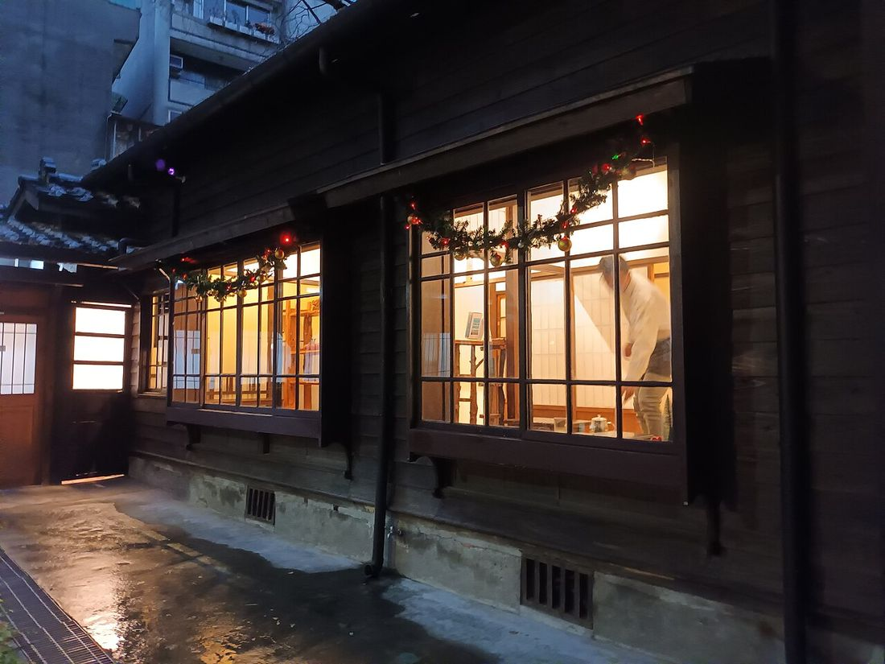
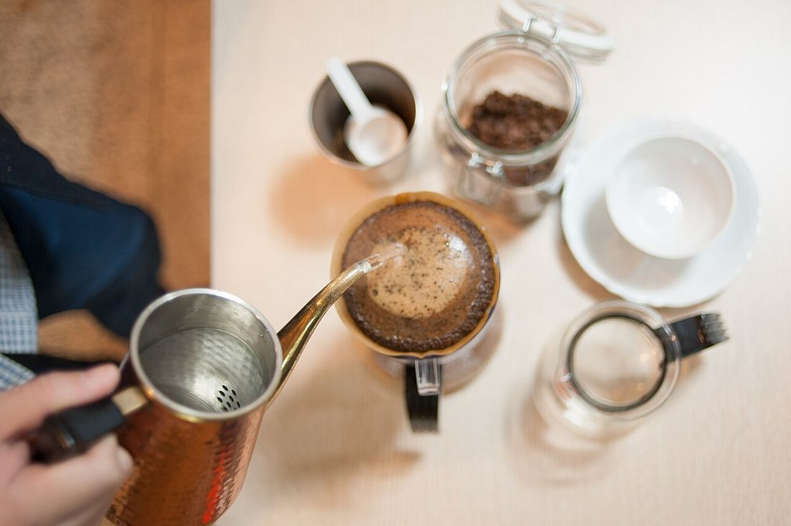
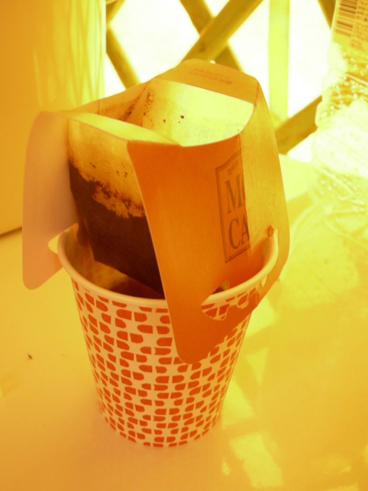

台北老店．中山與東區
湛盧：把手沖端到桌邊
二〇〇二年失業，買下倒閉公司留下的一台咖啡機。二十年後，一年賣八百萬包濾掛。

他是湛盧咖啡的廖國明。
賠了三年
網路泡沫，軟體公司倒閉，三十多歲的廖國明失業了。他買下債權人沒搬走、缺零件的咖啡機。
二〇〇三年在台北興安街開店，取名湛盧，是春秋時代的一把名劍。一開始比連鎖咖啡便宜二十元，三年賠了四百萬。
十一位熟客與桌邊手沖
轉機在青田街：十一位熟客幫他湊出裝修費。他在這裡開始桌邊手沖，店員到客人桌邊當面沖一杯。
後來搬到新生南路的安靜巷子，半年後才轉虧為盈。
濾掛一年八百萬包
二〇〇九年開始賣濾掛，一開始每月五六千包；二〇二五年報導說，一年賣八百萬包，年營收一億六千萬。
他的第一支配方豆，用七種產地生豆、花七八個月、調了二十一次。
專業點：配方豆 vs 單品豆
・配方豆：不同產地或處理法混合，追求層次和平衡
・單品豆：同一產區或莊園，喝那塊土地的個性
・同一支豆子，烘法和沖法也會改變味道
・點手沖前，可以先問店員今天推哪一支
老照片與街景



店家資訊
- 店家
- 湛盧咖啡 大安店
- 地點
- 台北市大安區新生南路一段161巷2-1號
- 現況
- 營業中
- 營業時間
- 常有變動，出發前請再確認
- IG 影片
- 2/5 上片
你是配方豆派還是單品豆派？留言投票。
到 IG 留言告訴我們
到 IG 留言告訴我們